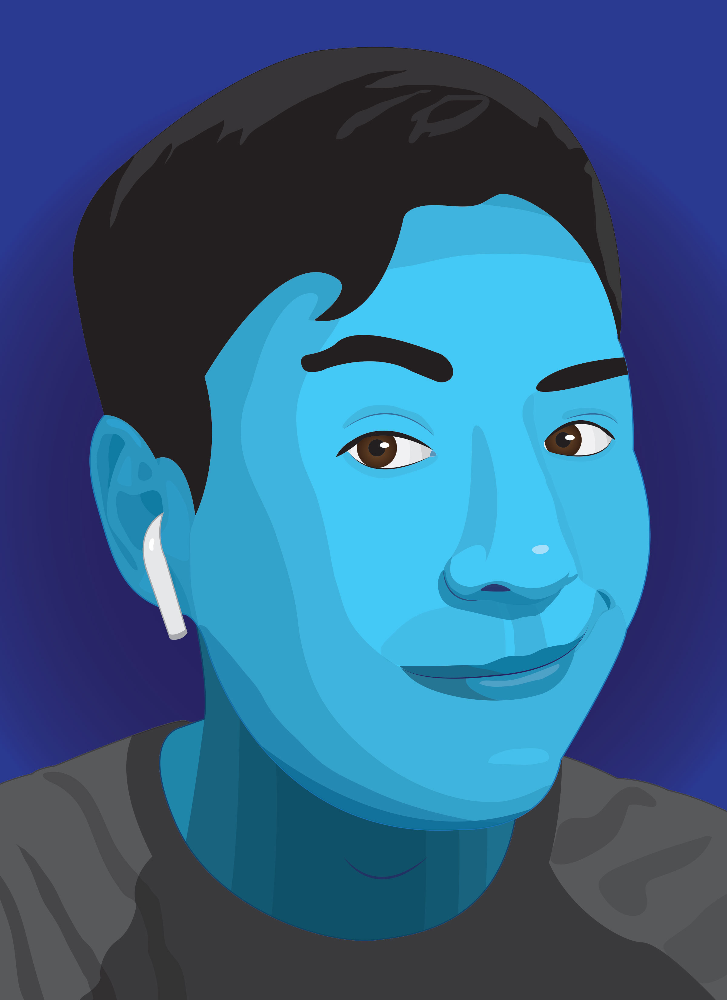

Feeling Blue

I wanted to make a portrait of myself utilizing my favorite color, blue.
A lot of the time, blue can be interpreted as a sad color, having to do with tears and rain.
Even the phrase "feeling blue" is synonymous with feeling sad.
But in this case, I wanted to work with a much more happy interpretation of the color.
To me, blue is not just sadness but can also be creativity, resembling the boundlessness of the sky and the sea.
Unlike my Saul Bass portrait, I wanted my own portrait to stray away from sharp geometry. I wanted it to have lots of organic shapes like circles and curves. It almost gives it a water-like aesthetic, something that resembles waves or droplets.